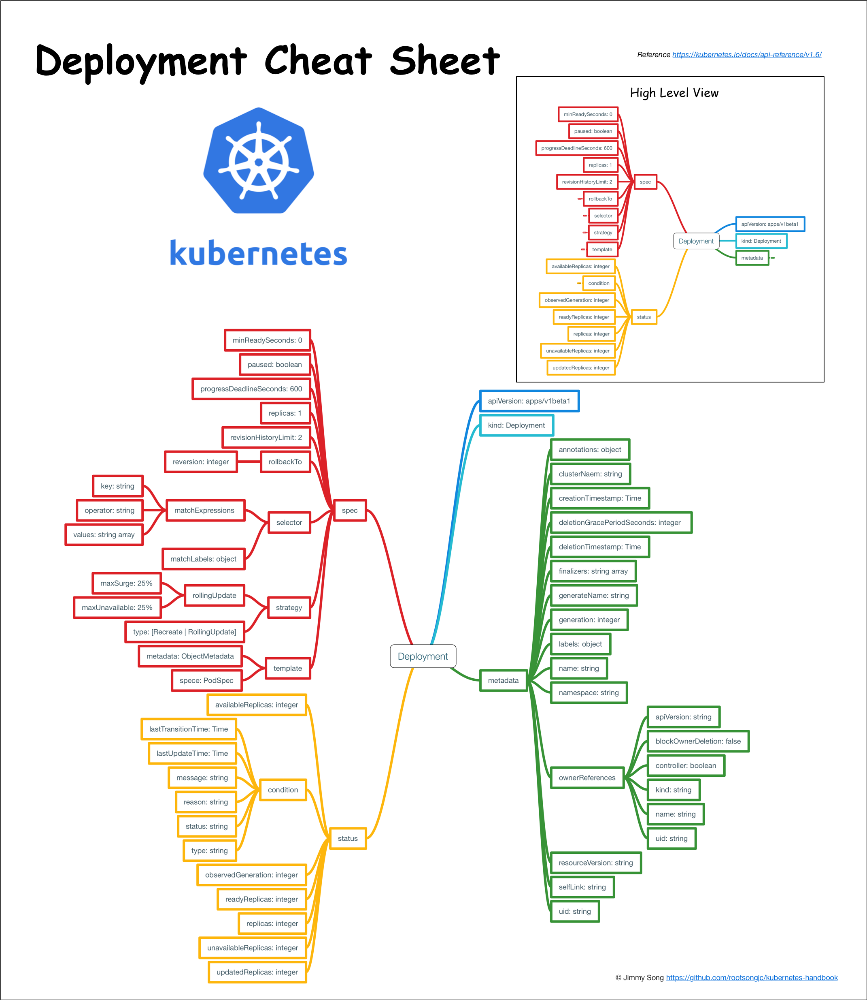

Deployment
Deployment 为 Pod 和 ReplicaSet 提供了一个声明式定义（declarative）方法，用来替代以前的 ReplicationController 来方便的管理应用。典型的应用场景包括：
- 定义 Deployment 来创建 Pod 和 ReplicaSet
- 滚动升级和回滚应用
- 扩容和缩容
- 暂停和继续 Deployment
比如一个简单的 nginx 应用可以定义为：
apiVersion: extensions/v1beta1
kind: Deployment
metadata:
name: nginx-deployment
spec:
replicas: 3
template:
metadata:
labels:
app: nginx
spec:
containers:
- name: nginx
image: nginx:1.7.9
ports:
- containerPort: 80
扩容：
kubectl scale deployment nginx-deployment --replicas 10
如果集群支持 horizontal pod autoscaling 的话，还可以为 Deployment 设置自动扩展：
kubectl autoscale deployment nginx-deployment --min=10 --max=15 --cpu-percent=80
更新镜像也比较简单：
kubectl set image deployment/nginx-deployment nginx=nginx:1.9.1
回滚：
kubectl rollout undo deployment/nginx-deployment
Deployment 结构示意图

Deployment 概念详细解析
本文翻译自 kubernetes 官方文档：https://kubernetes.io/docs/concepts/workloads/controllers/deployment
根据 2017 年 5 月 10 日的 Commit 8481c02 翻译。
Deployment 是什么？
Deployment 为 Pod 和 Replica Set（下一代 Replication Controller）提供声明式更新。
您只需要在 Deployment 中描述您想要的目标状态是什么，Deployment controller 就会帮您将 Pod 和 ReplicaSet 的实际状态改变到您的目标状态。您可以定义一个全新的 Deployment 来创建 ReplicaSet 或者删除已有的 Deployment 并创建一个新的来替换。
注意：您不该手动管理由 Deployment 创建的 ReplicaSet，否则您就篡越了 Deployment controller 的职责！下文罗列了 Deployment 对象中已经覆盖了所有的用例。如果未有覆盖您所有需要的用例，请直接在 Kubernetes 的代码库中提 issue。
典型的用例如下：
- 使用 Deployment 来创建 ReplicaSet。ReplicaSet 在后台创建 pod。检查启动状态，看它是成功还是失败。
- 然后，通过更新 Deployment 的 PodTemplateSpec 字段来声明 Pod 的新状态。这会创建一个新的 ReplicaSet，Deployment 会按照控制的速率将 pod 从旧的 ReplicaSet 移动到新的 ReplicaSet 中。
- 如果当前状态不稳定，回滚到之前的 Deployment revision。每次回滚都会更新 Deployment 的 revision。
- 扩容 Deployment 以满足更高的负载。
- 暂停 Deployment 来应用 PodTemplateSpec 的多个修复，然后恢复上线。
- 根据 Deployment 的状态判断上线是否 hang 住了。
- 清除旧的不必要的 ReplicaSet。
创建 Deployment
下面是一个 Deployment 示例，它创建了一个 ReplicaSet 来启动 3 个 nginx pod。
下载示例文件并执行命令：
$ kubectl create -f https://kubernetes.io/docs/user-guide/nginx-deployment.yaml --record
deployment "nginx-deployment" created
将 kubectl 的--record的 flag 设置为true 可以在 annotation 中记录当前命令创建或者升级了该资源。这在未来会很有用，例如，查看在每个 Deployment revision 中执行了哪些命令。
然后立即执行 get 将获得如下结果：
$ kubectl get deployments
NAME DESIRED CURRENT UP-TO-DATE AVAILABLE AGE
nginx-deployment 3 0 0 0 1s
输出结果表明我们希望的 repalica 数是 3（根据 deployment 中的.spec.replicas配置）当前 replica 数（.status.replicas）是 0, 最新的 replica 数（.status.updatedReplicas）是 0，可用的 replica 数（.status.availableReplicas）是 0。
过几秒后再执行 get 命令，将获得如下输出：
$ kubectl get deployments
NAME DESIRED CURRENT UP-TO-DATE AVAILABLE AGE
nginx-deployment 3 3 3 3 18s
我们可以看到 Deployment 已经创建了 3 个 replica，所有的 replica 都已经是最新的了（包含最新的 pod template），可用的（根据 Deployment 中的.spec.minReadySeconds声明，处于已就绪状态的 pod 的最少个数）。执行kubectl get rs和kubectl get pods会显示 Replica Set（RS）和 Pod 已创建。
$ kubectl get rs
NAME DESIRED CURRENT READY AGE
nginx-deployment-2035384211 3 3 0 18s
您可能会注意到 ReplicaSet 的名字总是<Deployment 的名字>-<pod template 的 hash 值>。
$ kubectl get pods --show-labels
NAME READY STATUS RESTARTS AGE LABELS
nginx-deployment-2035384211-7ci7o 1/1 Running 0 18s app=nginx,pod-template-hash=2035384211
nginx-deployment-2035384211-kzszj 1/1 Running 0 18s app=nginx,pod-template-hash=2035384211
nginx-deployment-2035384211-qqcnn 1/1 Running 0 18s app=nginx,pod-template-hash=2035384211
刚创建的 Replica Set 将保证总是有 3 个 nginx 的 pod 存在。
注意： 您必须在 Deployment 中的 selector 指定正确的 pod template label（在该示例中是 app = nginx），不要跟其他的 controller 的 selector 中指定的 pod template label 搞混了（包括 Deployment、Replica Set、Replication Controller 等）。Kubernetes 本身并不会阻止您任意指定 pod template label，但是如果您真的这么做了，这些 controller 之间会相互打架，并可能导致不正确的行为。
Pod-template-hash label
注意：这个 label 不是用户指定的！
注意上面示例输出中的 pod label 里的 pod-template-hash label。当 Deployment 创建或者接管 ReplicaSet 时，Deployment controller 会自动为 Pod 添加 pod-template-hash label。这样做的目的是防止 Deployment 的子 ReplicaSet 的 pod 名字重复。通过将 ReplicaSet 的 PodTemplate 进行哈希散列，使用生成的哈希值作为 label 的值，并添加到 ReplicaSet selector 里、 pod template label 和 ReplicaSet 管理中的 Pod 上。
更新 Deployment
注意：Deployment 的 rollout 当且仅当 Deployment 的 pod template（例如 .spec.template）中的 label 更新或者镜像更改时被触发。其他更新，例如扩容 Deployment 不会触发 rollout。
假如我们现在想要让 nginx pod 使用 nginx:1.9.1 的镜像来代替原来的 nginx:1.7.9 的镜像。
$ kubectl set image deployment/nginx-deployment nginx=nginx:1.9.1
deployment "nginx-deployment" image updated
我们可以使用edit命令来编辑 Deployment，修改.spec.template.spec.containers [0].image，将nginx:1.7.9改写成nginx:1.9.1。
$ kubectl edit deployment/nginx-deployment
deployment "nginx-deployment" edited
查看 rollout 的状态，只要执行：
$ kubectl rollout status deployment/nginx-deployment
Waiting for rollout to finish: 2 out of 3 new replicas have been updated...
deployment "nginx-deployment" successfully rolled out
Rollout 成功后，getDeployment：
$ kubectl get deployments
NAME DESIRED CURRENT UP-TO-DATE AVAILABLE AGE
nginx-deployment 3 3 3 3 36s
UP-TO-DATE 的 replica 的数目已经达到了配置中要求的数目。
CURRENT 的 replica 数表示 Deployment 管理的 replica 数量，AVAILABLE 的 replica 数是当前可用的 replica 数量。
我们通过执行 kubectl get rs 可以看到 Deployment 更新了 Pod，通过创建一个新的 ReplicaSet 并扩容了 3 个 replica，同时将原来的 ReplicaSet 缩容到了 0 个 replica。
$ kubectl get rs
NAME DESIRED CURRENT READY AGE
nginx-deployment-1564180365 3 3 0 6s
nginx-deployment-2035384211 0 0 0 36s
执行get pods只会看到当前的新的 pod：
$ kubectl get pods
NAME READY STATUS RESTARTS AGE
nginx-deployment-1564180365-khku8 1/1 Running 0 14s
nginx-deployment-1564180365-nacti 1/1 Running 0 14s
nginx-deployment-1564180365-z9gth 1/1 Running 0 14s
下次更新这些 pod 的时候，只需要更新 Deployment 中的 pod 的 template 即可。
Deployment 可以保证在升级时只有一定数量的 Pod 是 down 的。默认的，它会确保至少有比期望的 Pod 数量少一个是 up 状态（最多一个不可用）。
Deployment 同时也可以确保只创建出超过期望数量的一定数量的 Pod。默认的，它会确保最多比期望的 Pod 数量多一个的 Pod 是 up 的（最多 1 个 surge ）。
在未来的 Kuberentes 版本中，将从 1-1 变成 25%-25%。
例如，如果您自己看下上面的 Deployment，您会发现，开始创建一个新的 Pod，然后删除一些旧的 Pod 再创建一个新的。当新的 Pod 创建出来之前不会杀掉旧的 Pod。这样能够确保可用的 Pod 数量至少有 2 个，Pod 的总数最多 4 个。
$ kubectl describe deployments
Name: nginx-deployment
Namespace: default
CreationTimestamp: Tue, 15 Mar 2016 12:01:06 -0700
Labels: app=nginx
Selector: app=nginx
Replicas: 3 updated | 3 total | 3 available | 0 unavailable
StrategyType: RollingUpdate
MinReadySeconds: 0
RollingUpdateStrategy: 1 max unavailable, 1 max surge
OldReplicaSets: <none>
NewReplicaSet: nginx-deployment-1564180365 (3/3 replicas created)
Events:
FirstSeen LastSeen Count From SubobjectPath Type Reason Message
--------- -------- ----- ---- ------------- -------- ------ -------
36s 36s 1 {deployment-controller} Normal ScalingReplicaSet Scaled up replica set nginx-deployment-2035384211 to 3
23s 23s 1 {deployment-controller} Normal ScalingReplicaSet Scaled up replica set nginx-deployment-1564180365 to 1
23s 23s 1 {deployment-controller} Normal ScalingReplicaSet Scaled down replica set nginx-deployment-2035384211 to 2
23s 23s 1 {deployment-controller} Normal ScalingReplicaSet Scaled up replica set nginx-deployment-1564180365 to 2
21s 21s 1 {deployment-controller} Normal ScalingReplicaSet Scaled down replica set nginx-deployment-2035384211 to 0
21s 21s 1 {deployment-controller} Normal ScalingReplicaSet Scaled up replica set nginx-deployment-1564180365 to 3
我们可以看到当我们刚开始创建这个 Deployment 的时候，创建了一个 ReplicaSet（nginx-deployment-2035384211），并直接扩容到了 3 个 replica。
当我们更新这个 Deployment 的时候，它会创建一个新的 ReplicaSet（nginx-deployment-1564180365），将它扩容到 1 个 replica，然后缩容原先的 ReplicaSet 到 2 个 replica，此时满足至少 2 个 Pod 是可用状态，同一时刻最多有 4 个 Pod 处于创建的状态。
接着继续使用相同的 rolling update 策略扩容新的 ReplicaSet 和缩容旧的 ReplicaSet。最终，将会在新的 ReplicaSet 中有 3 个可用的 replica，旧的 ReplicaSet 的 replica 数目变成 0。
Rollover（多个 rollout 并行）
每当 Deployment controller 观测到有新的 deployment 被创建时，如果没有已存在的 ReplicaSet 来创建期望个数的 Pod 的话，就会创建出一个新的 ReplicaSet 来做这件事。已存在的 ReplicaSet 控制 label 与 .spec.selector 匹配但是 template 跟 .spec.template 不匹配的 Pod 缩容。最终，新的 ReplicaSet 将会扩容出 .spec.replicas 指定数目的 Pod，旧的 ReplicaSet 会缩容到 0。
如果您更新了一个的已存在并正在进行中的 Deployment，每次更新 Deployment 都会创建一个新的 ReplicaSet 并扩容它，同时回滚之前扩容的 ReplicaSet —— 将它添加到旧的 ReplicaSet 列表中，开始缩容。
例如，假如您创建了一个有 5 个 niginx:1.7.9 replica 的 Deployment，但是当还只有 3 个 nginx:1.7.9 的 replica 创建出来的时候您就开始更新含有 5 个 nginx:1.9.1 replica 的 Deployment。在这种情况下，Deployment 会立即杀掉已创建的 3 个 nginx:1.7.9 的 Pod，并开始创建 nginx:1.9.1 的 Pod。它不会等到所有的 5 个 nginx:1.7.9 的 Pod 都创建完成后才开始改变航道。
Label selector 更新
我们通常不鼓励更新 label selector，我们建议事先规划好您的 selector。
任何情况下，只要您想要执行 label selector 的更新，请一定要谨慎并确认您已经预料到所有可能因此导致的后果。
- 增添 selector 需要同时在 Deployment 的 spec 中更新新的 label，否则将返回校验错误。此更改是不可覆盖的，这意味着新的 selector 不会选择使用旧 selector 创建的 ReplicaSet 和 Pod，从而导致所有旧版本的 ReplicaSet 都被丢弃，并创建新的 ReplicaSet。
- 更新 selector，即更改 selector key 的当前值，将导致跟增添 selector 同样的后果。
- 删除 selector，即删除 Deployment selector 中的已有的 key，不需要对 Pod template label 做任何更改，现有的 ReplicaSet 也不会成为孤儿，但是请注意，删除的 label 仍然存在于现有的 Pod 和 ReplicaSet 中。
回退 Deployment
有时候您可能想回退一个 Deployment，例如，当 Deployment 不稳定时，比如一直 crash looping。
默认情况下，kubernetes 会在系统中保存前两次的 Deployment 的 rollout 历史记录，以便您可以随时回退（您可以修改 revision history limit 来更改保存的 revision 数）。
注意：只要 Deployment 的 rollout 被触发就会创建一个 revision。也就是说当且仅当 Deployment 的 Pod template（如 .spec.template）被更改，例如更新 template 中的 label 和容器镜像时，就会创建出一个新的 revision。
其他的更新，比如扩容 Deployment 不会创建 revision—— 因此我们可以很方便的手动或者自动扩容。这意味着当您回退到历史 revision 时，只有 Deployment 中的 Pod template 部分才会回退。
假设我们在更新 Deployment 的时候犯了一个拼写错误，将镜像的名字写成了 nginx:1.91，而正确的名字应该是 nginx:1.9.1：
$ kubectl set image deployment/nginx-deployment nginx=nginx:1.91
deployment "nginx-deployment" image updated
Rollout 将会卡住。
$ kubectl rollout status deployments nginx-deployment
Waiting for rollout to finish: 2 out of 3 new replicas have been updated...
按住 Ctrl-C 停止上面的 rollout 状态监控。
您会看到旧的 replica（nginx-deployment-1564180365 和 nginx-deployment-2035384211）和新的 replica （nginx-deployment-3066724191）数目都是 2 个。
$ kubectl get rs
NAME DESIRED CURRENT READY AGE
nginx-deployment-1564180365 2 2 0 25s
nginx-deployment-2035384211 0 0 0 36s
nginx-deployment-3066724191 2 2 2 6s
看下创建 Pod，您会看到有两个新的 ReplicaSet 创建的 Pod 处于 ImagePullBackOff 状态，循环拉取镜像。
$ kubectl get pods
NAME READY STATUS RESTARTS AGE
nginx-deployment-1564180365-70iae 1/1 Running 0 25s
nginx-deployment-1564180365-jbqqo 1/1 Running 0 25s
nginx-deployment-3066724191-08mng 0/1 ImagePullBackOff 0 6s
nginx-deployment-3066724191-eocby 0/1 ImagePullBackOff 0 6s
注意，Deployment controller 会自动停止坏的 rollout，并停止扩容新的 ReplicaSet。
$ kubectl describe deployment
Name: nginx-deployment
Namespace: default
CreationTimestamp: Tue, 15 Mar 2016 14:48:04 -0700
Labels: app=nginx
Selector: app=nginx
Replicas: 2 updated | 3 total | 2 available | 2 unavailable
StrategyType: RollingUpdate
MinReadySeconds: 0
RollingUpdateStrategy: 1 max unavailable, 1 max surge
OldReplicaSets: nginx-deployment-1564180365 (2/2 replicas created)
NewReplicaSet: nginx-deployment-3066724191 (2/2 replicas created)
Events:
FirstSeen LastSeen Count From SubobjectPath Type Reason Message
--------- -------- ----- ---- ------------- -------- ------ -------
1m 1m 1 {deployment-controller} Normal ScalingReplicaSet Scaled up replica set nginx-deployment-2035384211 to 3
22s 22s 1 {deployment-controller} Normal ScalingReplicaSet Scaled up replica set nginx-deployment-1564180365 to 1
22s 22s 1 {deployment-controller} Normal ScalingReplicaSet Scaled down replica set nginx-deployment-2035384211 to 2
22s 22s 1 {deployment-controller} Normal ScalingReplicaSet Scaled up replica set nginx-deployment-1564180365 to 2
21s 21s 1 {deployment-controller} Normal ScalingReplicaSet Scaled down replica set nginx-deployment-2035384211 to 0
21s 21s 1 {deployment-controller} Normal ScalingReplicaSet Scaled up replica set nginx-deployment-1564180365 to 3
13s 13s 1 {deployment-controller} Normal ScalingReplicaSet Scaled up replica set nginx-deployment-3066724191 to 1
13s 13s 1 {deployment-controller} Normal ScalingReplicaSet Scaled down replica set nginx-deployment-1564180365 to 2
13s 13s 1 {deployment-controller} Normal ScalingReplicaSet Scaled up replica set nginx-deployment-3066724191 to 2
为了修复这个问题，我们需要回退到稳定的 Deployment revision。
检查 Deployment 升级的历史记录
首先，检查下 Deployment 的 revision：
$ kubectl rollout history deployment/nginx-deployment
deployments "nginx-deployment":
REVISION CHANGE-CAUSE
1 kubectl create -f https://kubernetes.io/docs/user-guide/nginx-deployment.yaml--record
2 kubectl set image deployment/nginx-deployment nginx=nginx:1.9.1
3 kubectl set image deployment/nginx-deployment nginx=nginx:1.91
因为我们创建 Deployment 的时候使用了--record 参数可以记录命令，我们可以很方便的查看每次 revision 的变化。
查看单个 revision 的详细信息：
$ kubectl rollout history deployment/nginx-deployment --revision=2
deployments "nginx-deployment" revision 2
Labels: app=nginx
pod-template-hash=1159050644
Annotations: kubernetes.io/change-cause=kubectl set image deployment/nginx-deployment nginx=nginx:1.9.1
Containers:
nginx:
Image: nginx:1.9.1
Port: 80/TCP
QoS Tier:
cpu: BestEffort
memory: BestEffort
Environment Variables: <none>
No volumes.
回退到历史版本
现在，我们可以决定回退当前的 rollout 到之前的版本：
$ kubectl rollout undo deployment/nginx-deployment
deployment "nginx-deployment" rolled back
也可以使用--revision参数指定某个历史版本：
$ kubectl rollout undo deployment/nginx-deployment --to-revision=2
deployment "nginx-deployment" rolled back
该 Deployment 现在已经回退到了先前的稳定版本。如您所见，Deployment controller 产生了一个回退到 revison 2 的DeploymentRollback的 event。
$ kubectl get deployment
NAME DESIRED CURRENT UP-TO-DATE AVAILABLE AGE
nginx-deployment 3 3 3 3 30m
$ kubectl describe deployment
Name: nginx-deployment
Namespace: default
CreationTimestamp: Tue, 15 Mar 2016 14:48:04 -0700
Labels: app=nginx
Selector: app=nginx
Replicas: 3 updated | 3 total | 3 available | 0 unavailable
StrategyType: RollingUpdate
MinReadySeconds: 0
RollingUpdateStrategy: 1 max unavailable, 1 max surge
OldReplicaSets: <none>
NewReplicaSet: nginx-deployment-1564180365 (3/3 replicas created)
Events:
FirstSeen LastSeen Count From SubobjectPath Type Reason Message
--------- -------- ----- ---- ------------- -------- ------ -------
30m 30m 1 {deployment-controller} Normal ScalingReplicaSet Scaled up replica set nginx-deployment-2035384211 to 3
29m 29m 1 {deployment-controller} Normal ScalingReplicaSet Scaled up replica set nginx-deployment-1564180365 to 1
29m 29m 1 {deployment-controller} Normal ScalingReplicaSet Scaled down replica set nginx-deployment-2035384211 to 2
29m 29m 1 {deployment-controller} Normal ScalingReplicaSet Scaled up replica set nginx-deployment-1564180365 to 2
29m 29m 1 {deployment-controller} Normal ScalingReplicaSet Scaled down replica set nginx-deployment-2035384211 to 0
29m 29m 1 {deployment-controller} Normal ScalingReplicaSet Scaled up replica set nginx-deployment-3066724191 to 2
29m 29m 1 {deployment-controller} Normal ScalingReplicaSet Scaled up replica set nginx-deployment-3066724191 to 1
29m 29m 1 {deployment-controller} Normal ScalingReplicaSet Scaled down replica set nginx-deployment-1564180365 to 2
2m 2m 1 {deployment-controller} Normal ScalingReplicaSet Scaled down replica set nginx-deployment-3066724191 to 0
2m 2m 1 {deployment-controller} Normal DeploymentRollback Rolled back deployment "nginx-deployment" to revision 2
29m 2m 2 {deployment-controller} Normal ScalingReplicaSet Scaled up replica set nginx-deployment-1564180365 to 3
清理 Policy
您可以通过设置 .spec.revisonHistoryLimit 项来指定 deployment 最多保留多少 revision 历史记录。默认的会保留所有的 revision；如果将该项设置为 0，Deployment 就不允许回退了。
Deployment 扩容
您可以使用以下命令扩容 Deployment：
$ kubectl scale deployment nginx-deployment --replicas 10
deployment "nginx-deployment" scaled
假设您的集群中启用了 horizontal pod autoscaling，您可以给 Deployment 设置一个 autoscaler，基于当前 Pod 的 CPU 利用率选择最少和最多的 Pod 数。
$ kubectl autoscale deployment nginx-deployment --min=10 --max=15 --cpu-percent=80
deployment "nginx-deployment" autoscaled
比例扩容
RollingUpdate Deployment 支持同时运行一个应用的多个版本。或者 autoscaler 扩 容 RollingUpdate Deployment 的时候，正在中途的 rollout（进行中或者已经暂停的），为了降低风险，Deployment controller 将会平衡已存在的活动中的 ReplicaSet（有 Pod 的 ReplicaSet）和新加入的 replica。这被称为比例扩容。
例如，您正在运行中含有 10 个 replica 的 Deployment。maxSurge=3，maxUnavailable=2。
$ kubectl get deploy
NAME DESIRED CURRENT UP-TO-DATE AVAILABLE AGE
nginx-deployment 10 10 10 10 50s
您更新了一个镜像，而在集群内部无法解析。
$ kubectl set image deploy/nginx-deployment nginx=nginx:sometag
deployment "nginx-deployment" image updated
镜像更新启动了一个包含 ReplicaSet nginx-deployment-1989198191 的新的 rollout，但是它被阻塞了，因为我们上面提到的 maxUnavailable。
$ kubectl get rs
NAME DESIRED CURRENT READY AGE
nginx-deployment-1989198191 5 5 0 9s
nginx-deployment-618515232 8 8 8 1m
然后发起了一个新的 Deployment 扩容请求。autoscaler 将 Deployment 的 repllica 数目增加到了 15 个。Deployment controller 需要判断在哪里增加这 5 个新的 replica。如果我们没有谁用比例扩容，所有的 5 个 replica 都会加到一个新的 ReplicaSet 中。如果使用比例扩容，新添加的 replica 将传播到所有的 ReplicaSet 中。大的部分加入 replica 数最多的 ReplicaSet 中，小的部分加入到 replica 数少的 ReplciaSet 中。0 个 replica 的 ReplicaSet 不会被扩容。
在我们上面的例子中，3 个 replica 将添加到旧的 ReplicaSet 中，2 个 replica 将添加到新的 ReplicaSet 中。rollout 进程最终会将所有的 replica 移动到新的 ReplicaSet 中，假设新的 replica 成为健康状态。
$ kubectl get deploy
NAME DESIRED CURRENT UP-TO-DATE AVAILABLE AGE
nginx-deployment 15 18 7 8 7m
$ kubectl get rs
NAME DESIRED CURRENT READY AGE
nginx-deployment-1989198191 7 7 0 7m
nginx-deployment-618515232 11 11 11 7m
删除 autoscale
kubectl get hpa
kubectl delete hpa ${name of hpa}
暂停和恢复 Deployment
您可以在发出一次或多次更新前暂停一个 Deployment，然后再恢复它。这样您就能在 Deployment 暂停期间进行多次修复工作，而不会发出不必要的 rollout。
例如使用刚刚创建 Deployment：
$ kubectl get deploy
NAME DESIRED CURRENT UP-TO-DATE AVAILABLE AGE
nginx 3 3 3 3 1m
[mkargaki@dhcp129-211 kubernetes]$ kubectl get rs
NAME DESIRED CURRENT READY AGE
nginx-2142116321 3 3 3 1m
使用以下命令暂停 Deployment：
$ kubectl rollout pause deployment/nginx-deployment
deployment "nginx-deployment" paused
然后更新 Deplyment 中的镜像：
$ kubectl set image deploy/nginx nginx=nginx:1.9.1
deployment "nginx-deployment" image updated
注意新的 rollout 启动了：
$ kubectl rollout history deploy/nginx
deployments "nginx"
REVISION CHANGE-CAUSE
1 <none>
$ kubectl get rs
NAME DESIRED CURRENT READY AGE
nginx-2142116321 3 3 3 2m
您可以进行任意多次更新，例如更新使用的资源：
$ kubectl set resources deployment nginx -c=nginx --limits=cpu=200m,memory=512Mi
deployment "nginx" resource requirements updated
Deployment 暂停前的初始状态将继续它的功能，而不会对 Deployment 的更新产生任何影响，只要 Deployment 是暂停的。
最后，恢复这个 Deployment，观察完成更新的 ReplicaSet 已经创建出来了：
$ kubectl rollout resume deploy nginx
deployment "nginx" resumed
$ KUBECTL get rs -w
NAME DESIRED CURRENT READY AGE
nginx-2142116321 2 2 2 2m
nginx-3926361531 2 2 0 6s
nginx-3926361531 2 2 1 18s
nginx-2142116321 1 2 2 2m
nginx-2142116321 1 2 2 2m
nginx-3926361531 3 2 1 18s
nginx-3926361531 3 2 1 18s
nginx-2142116321 1 1 1 2m
nginx-3926361531 3 3 1 18s
nginx-3926361531 3 3 2 19s
nginx-2142116321 0 1 1 2m
nginx-2142116321 0 1 1 2m
nginx-2142116321 0 0 0 2m
nginx-3926361531 3 3 3 20s
^C
$ KUBECTL get rs
NAME DESIRED CURRENT READY AGE
nginx-2142116321 0 0 0 2m
nginx-3926361531 3 3 3 28s
注意：在恢复 Deployment 之前您无法回退一个已经暂停的 Deployment。
Deployment 状态
Deployment 在生命周期中有多种状态。在创建一个新的 ReplicaSet 的时候它可以是 progressing 状态， complete 状态，或者 fail to progress 状态。
进行中的 Deployment
Kubernetes 将执行过下列任务之一的 Deployment 标记为 progressing 状态：
- Deployment 正在创建新的 ReplicaSet 过程中。
- Deployment 正在扩容一个已有的 ReplicaSet。
- Deployment 正在缩容一个已有的 ReplicaSet。
- 有新的可用的 pod 出现。
您可以使用 kubectl rollout status 命令监控 Deployment 的进度。
完成的 Deployment
Kubernetes 将包括以下特性的 Deployment 标记为 complete 状态：
- Deployment 最小可用。最小可用意味着 Deployment 的可用 replica 个数等于或者超过 Deployment 策略中的期望个数。
- 所有与该 Deployment 相关的 replica 都被更新到了您指定版本，也就说更新完成。
- 该 Deployment 中没有旧的 Pod 存在。
您可以用 kubectl rollout status 命令查看 Deployment 是否完成。如果 rollout 成功完成，kubectl rollout status 将返回一个 0 值的 Exit Code。
$ kubectl rollout status deploy/nginx
Waiting for rollout to finish: 2 of 3 updated replicas are available...
deployment "nginx" successfully rolled out
$ echo $?
0
失败的 Deployment
您的 Deployment 在尝试部署新的 ReplicaSet 的时候可能卡住，永远也不会完成。这可能是因为以下几个因素引起的：
- 无效的引用
- 不可读的 probe failure
- 镜像拉取错误
- 权限不够
- 范围限制
- 程序运行时配置错误
探测这种情况的一种方式是，在您的 Deployment spec 中指定 spec.progressDeadlineSeconds。spec.progressDeadlineSeconds 表示 Deployment controller 等待多少秒才能确定（通过 Deployment status）Deployment 进程是卡住的。
下面的 kubectl 命令设置 progressDeadlineSeconds 使 controller 在 Deployment 在进度卡住 10 分钟后报告：
$ kubectl patch deployment/nginx-deployment -p '{"spec":{"progressDeadlineSeconds":600}}'
"nginx-deployment" patched
当超过截止时间后，Deployment controller 会在 Deployment 的status.conditions 中增加一条 DeploymentCondition，它包括如下属性：
- Type=Progressing
- Status=False
- Reason=ProgressDeadlineExceeded
注意：kubernetes 除了报告 Reason=ProgressDeadlineExceeded 状态信息外不会对卡住的 Deployment 做任何操作。更高层次的协调器可以利用它并采取相应行动，例如，回滚 Deployment 到之前的版本。
注意：如果您暂停了一个 Deployment，在暂停的这段时间内 kubernetnes 不会检查您指定的 deadline。您可以在 Deployment 的 rollout 途中安全的暂停它，然后再恢复它，这不会触发超过 deadline 的状态。
您可能在使用 Deployment 的时候遇到一些短暂的错误，这些可能是由于您设置了太短的 timeout，也有可能是因为各种其他错误导致的短暂错误。例如，假设您使用了无效的引用。当您 Describe Deployment 的时候可能会注意到如下信息：
$ kubectl describe deployment nginx-deployment
<...>
Conditions:
Type Status Reason
---- ------ ------
Available True MinimumReplicasAvailable
Progressing True ReplicaSetUpdated
ReplicaFailure True FailedCreate
<...>
执行kubectl get deployment nginx-deployment -o yaml，Deployement 的状态可能看起来像这个样子：
status:
availableReplicas: 2
conditions:
- lastTransitionTime: 2016-10-04T12:25:39Z
lastUpdateTime: 2016-10-04T12:25:39Z
message: Replica set "nginx-deployment-4262182780" is progressing.
reason: ReplicaSetUpdated
status: "True"
type: Progressing
- lastTransitionTime: 2016-10-04T12:25:42Z
lastUpdateTime: 2016-10-04T12:25:42Z
message: Deployment has minimum availability.
reason: MinimumReplicasAvailable
status: "True"
type: Available
- lastTransitionTime: 2016-10-04T12:25:39Z
lastUpdateTime: 2016-10-04T12:25:39Z
message: 'Error creating: pods "nginx-deployment-4262182780-" is forbidden: exceeded quota:
object-counts, requested: pods=1, used: pods=3, limited: pods=2'
reason: FailedCreate
status: "True"
type: ReplicaFailure
observedGeneration: 3
replicas: 2
unavailableReplicas: 2
最终，一旦超过 Deployment 进程的 deadline，kubernetes 会更新状态和导致 Progressing 状态的原因：
Conditions:
Type Status Reason
---- ------ ------
Available True MinimumReplicasAvailable
Progressing False ProgressDeadlineExceeded
ReplicaFailure True FailedCreate
您可以通过缩容 Deployment 的方式解决配额不足的问题，或者增加您的 namespace 的配额。如果您满足了配额条件后，Deployment controller 就会完成您的 Deployment rollout，您将看到 Deployment 的状态更新为成功状态（Status=True并且Reason=NewReplicaSetAvailable）。
Conditions:
Type Status Reason
---- ------ ------
Available True MinimumReplicasAvailable
Progressing True NewReplicaSetAvailable
Type=Available、 Status=True 意味着您的 Deployment 有最小可用性。 最小可用性是在 Deployment 策略中指定的参数。Type=Progressing 、 Status=True 意味着您的 Deployment 或者在部署过程中，或者已经成功部署，达到了期望的最少的可用 replica 数量（查看特定状态的 Reason—— 在我们的例子中 Reason=NewReplicaSetAvailable 意味着 Deployment 已经完成）。
您可以使用 kubectl rollout status 命令查看 Deployment 进程是否失败。当 Deployment 过程超过了 deadline，kubectl rollout status 将返回非 0 的 exit code。
$ kubectl rollout status deploy/nginx
Waiting for rollout to finish: 2 out of 3 new replicas have been updated...
error: deployment "nginx" exceeded its progress deadline
$ echo $?
1
操作失败的 Deployment
所有对完成的 Deployment 的操作都适用于失败的 Deployment。您可以对它扩 / 缩容，回退到历史版本，您甚至可以多次暂停它来应用 Deployment pod template。
清理 Policy
您可以设置 Deployment 中的 .spec.revisionHistoryLimit 项来指定保留多少旧的 ReplicaSet。 余下的将在后台被当作垃圾收集。默认的，所有的 revision 历史就都会被保留。在未来的版本中，将会更改为 2。
注意：将该值设置为 0，将导致所有的 Deployment 历史记录都会被清除，该 Deployment 就无法再回退了。
用例
金丝雀 Deployment
如果您想要使用 Deployment 对部分用户或服务器发布 release，您可以创建多个 Deployment，每个 Deployment 对应一个 release，参照 managing resources 中对金丝雀模式的描述。
编写 Deployment Spec
在所有的 Kubernetes 配置中，Deployment 也需要 apiVersion，kind 和 metadata 这些配置项。配置文件的通用使用说明查看 部署应用，配置容器，和使用 kubectl 管理资源文档。
Pod Template
.spec.template 是 .spec 中唯一要求的字段。
.spec.template 是 pod template. 它跟 Pod 有一模一样的 schema，除了它是嵌套的并且不需要 apiVersion 和 kind 字段。
另外为了划分 Pod 的范围，Deployment 中的 pod template 必须指定适当的 label（不要跟其他 controller 重复了，参考 selector）和适当的重启策略。
.spec.template.spec.restartPolicy 可以设置为 Always , 如果不指定的话这就是默认配置。
Replicas
.spec.replicas 是可以选字段，指定期望的 pod 数量，默认是 1。
Selector
.spec.selector 是可选字段，用来指定 label selector ，圈定 Deployment 管理的 pod 范围。
如果被指定， .spec.selector 必须匹配 .spec.template.metadata.labels，否则它将被 API 拒绝。如果 .spec.selector 没有被指定， .spec.selector.matchLabels 默认是 .spec.template.metadata.labels。
在 Pod 的 template 跟 .spec.template 不同或者数量超过了 .spec.replicas 规定的数量的情况下，Deployment 会杀掉 label 跟 selector 不同的 Pod。
注意：您不应该再创建其他 label 跟这个 selector 匹配的 pod，或者通过其他 Deployment，或者通过其他 Controller，例如 ReplicaSet 和 ReplicationController。否则该 Deployment 会被把它们当成都是自己创建的。Kubernetes 不会阻止您这么做。
如果您有多个 controller 使用了重复的 selector，controller 们就会互相打架并导致不正确的行为。
策略
.spec.strategy 指定新的 Pod 替换旧的 Pod 的策略。 .spec.strategy.type 可以是 "Recreate" 或者是 "RollingUpdate"。"RollingUpdate" 是默认值。
Recreate Deployment
.spec.strategy.type==Recreate 时，在创建出新的 Pod 之前会先杀掉所有已存在的 Pod。
Rolling Update Deployment
.spec.strategy.type==RollingUpdate 时，Deployment 使用 rolling update 的方式更新 Pod 。您可以指定 maxUnavailable 和 maxSurge 来控制 rolling update 进程。
Max Unavailable
.spec.strategy.rollingUpdate.maxUnavailable 是可选配置项，用来指定在升级过程中不可用 Pod 的最大数量。该值可以是一个绝对值（例如 5），也可以是期望 Pod 数量的百分比（例如 10%）。通过计算百分比的绝对值向下取整。如果 .spec.strategy.rollingUpdate.maxSurge 为 0 时，这个值不可以为 0。默认值是 1。
例如，该值设置成 30%，启动 rolling update 后旧的 ReplicatSet 将会立即缩容到期望的 Pod 数量的 70%。新的 Pod ready 后，随着新的 ReplicaSet 的扩容，旧的 ReplicaSet 会进一步缩容，确保在升级的所有时刻可以用的 Pod 数量至少是期望 Pod 数量的 70%。
Max Surge
.spec.strategy.rollingUpdate.maxSurge 是可选配置项，用来指定可以超过期望的 Pod 数量的最大个数。该值可以是一个绝对值（例如 5）或者是期望的 Pod 数量的百分比（例如 10%）。当 MaxUnavailable 为 0 时该值不可以为 0。通过百分比计算的绝对值向上取整。默认值是 1。
例如，该值设置成 30%，启动 rolling update 后新的 ReplicatSet 将会立即扩容，新老 Pod 的总数不能超过期望的 Pod 数量的 130%。旧的 Pod 被杀掉后，新的 ReplicaSet 将继续扩容，旧的 ReplicaSet 会进一步缩容，确保在升级的所有时刻所有的 Pod 数量和不会超过期望 Pod 数量的 130%。
Progress Deadline Seconds
.spec.progressDeadlineSeconds 是可选配置项，用来指定在系统报告 Deployment 的 failed progressing —— 表现为 resource 的状态中 type=Progressing、Status=False、 Reason=ProgressDeadlineExceeded 前可以等待的 Deployment 进行的秒数。Deployment controller 会继续重试该 Deployment。未来，在实现了自动回滚后， deployment controller 在观察到这种状态时就会自动回滚。
如果设置该参数，该值必须大于 .spec.minReadySeconds。
Min Ready Seconds
.spec.minReadySeconds 是一个可选配置项，用来指定没有任何容器 crash 的 Pod 并被认为是可用状态的最小秒数。默认是 0（Pod 在 ready 后就会被认为是可用状态）。进一步了解什么什么后 Pod 会被认为是 ready 状态，参阅 Container Probes。
Rollback To
.spec.rollbackTo 是一个可以选配置项，用来配置 Deployment 回退的配置。设置该参数将触发回退操作，每次回退完成后，该值就会被清除。
Revision
.spec.rollbackTo.revision 是一个可选配置项，用来指定回退到的 revision。默认是 0，意味着回退到上一个 revision。
Revision History Limit
Deployment revision history 存储在它控制的 ReplicaSets 中。
.spec.revisionHistoryLimit 是一个可选配置项，用来指定可以保留的旧的 ReplicaSet 数量。该理想值取决于心 Deployment 的频率和稳定性。如果该值没有设置的话，默认所有旧的 Replicaset 或会被保留，将资源存储在 etcd 中，是用 kubectl get rs 查看输出。每个 Deployment 的该配置都保存在 ReplicaSet 中，然而，一旦您删除的旧的 RepelicaSet，您的 Deployment 就无法再回退到那个 revison 了。
如果您将该值设置为 0，所有具有 0 个 replica 的 ReplicaSet 都会被删除。在这种情况下，新的 Deployment rollout 无法撤销，因为 revision history 都被清理掉了。
Paused
.spec.paused 是可以可选配置项，boolean 值。用来指定暂停和恢复 Deployment。Paused 和没有 paused 的 Deployment 之间的唯一区别就是，所有对 paused deployment 中的 PodTemplateSpec 的修改都不会触发新的 rollout。Deployment 被创建之后默认是非 paused。